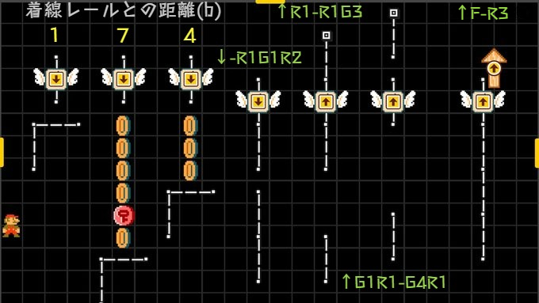
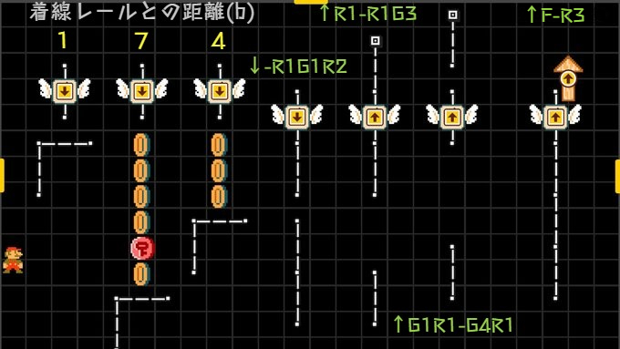

| 分符 | 拍 | 記号 | 長さ[f] |
|---|---|---|---|
| 1 | 4.00 | 𝅝 | |
| 符点2 | 3.00 | 𝅗𝅥. | |
| 2 | 2.00 | 𝅗𝅥 | |
| 符点4 | 1.50 | 𝅘𝅥. | |
| 4 | 1.00 | 𝅘𝅥 | |
| 符点8 | 0.75 | 𝅘𝅥𝅮. | |
| 8 | 0.50 | 𝅘𝅥𝅮 | |
| 16 | 0.25 | 𝅘𝅥𝅯 | |
| 3 | 1.33 | 𝅗𝅥𝅗𝅥𝅗𝅥 | |
| 6 | 0.67 | 𝅘𝅥𝅘𝅥𝅘𝅥 | |
| 12 | 0.33 | 𝅘𝅥𝅮𝅘𝅥𝅮𝅘𝅥𝅮 |
| 番号 | 01 |
|---|---|
| メモ | |
| n分符 | |
| 符長[f] | |
| xズレ[f] | 0 |
| yズレ[b] | 0 |
| 結果[f] | |
| 高さ[b] | |
| 配置 | |
| 代入 |
 

| 横 | スクロール方法 | 平均遅度 | 周期 |
|---|---|---|---|
| 強制(遅), クリボー | 32.00 | 32... | |
| 強制(中), コンベア(中) | 16.00 | 16... | |
| 強制(速), コンベア(速) | 8.00 | 8... | |
| 青ドクロ, コンベア(中)+歩き, コンベア(速)+クリボー | 6.40 | 6, 6, 7, 6, 7... | |
| 走り, ドッスン | 5.33 | 5, 5, 6... | |
| 歩き, 羽レールブロック | 10.66 | 10, 11, 11... | |
| レールブロック | 21.33 | 21, 21, 22... | |
| コンベア(速)+走り | 3.20 | 3, 3, 3, 3, 4... | |
| コンベア(中)+走り | 4.00 | 4... | |
| コンベア(速)+歩き | 4.57 | 4, 5, 4, 5, 4, 5, 5... | |
| コンベア(速)+チョロプー | 4.33 (終端) | (16, 7, 7, 6, 6, 6, 6, 5, 6, 5, 5, 4, 5, 5, ) 4, 5, 4... | |
| コンベア(速)+怒ハナチャン | 5.00 | 5... | |
| コンベア(速)+青トゲメット | 5.83 | 5, 6, 6, 6, 6, 6... | |
| 赤砲台メット | 3.60 | 3, 4, 3, 4, 4... | |
| コンベア(中)+赤砲台メット | 3.00 | 3... | |
| コンベア(速)+赤砲台メット | 2.50 | 2, 3... |
| 縦 | スクロール方法 | 平均遅度 | 周期 |
|---|---|---|---|
| ↓自由落下 | 4.00 | 4... | |
| ↓デブロス落下 | 2.00 | 2... | |
| ↑ブンブン急上昇 | 5.33 | 5, 5, 6... |